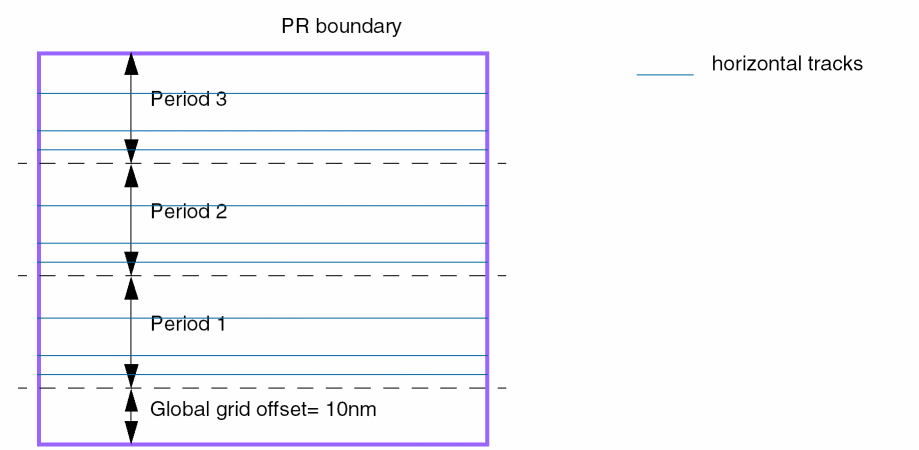
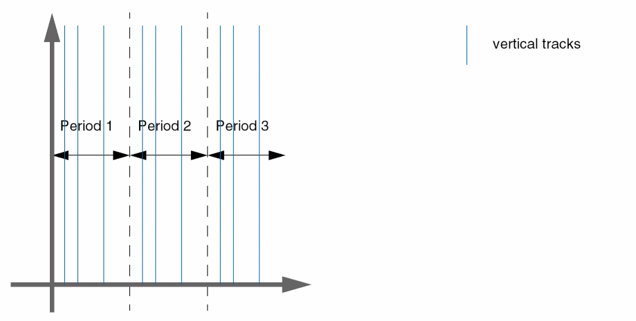

Pattern Flips
In a standard WSP grid, the pattern offset is always relative to the bottom-left edge of a region and the pattern tracks are applied toward the top-right edge of the region. This is also referred to as stepping.
A common placement strategy flips instances in alternating rows so that they can share a common power or ground rail. This strategy requires that routing tracks for these instances be flipped in the same manner.
The following example has three rows of devices. The devices in the middle row are flipped. This allows the middle row to share the power rail with the row below it and share the ground rail with the row above it.
A common usage model is to define the WSP period to match the row height. If this model was used for the example above, the figure would represent three periods. The tracks in the middle region must be flipped so that they align with the existing wires in the instance master.
Pattern flipping can be applied to the global grid or to a pattern region and is set with reference to the first period. The first period can be flipped or not flipped, as specified by the repeat mode, and all other periods alternate accordingly.
Identification of the First Period
-
For global grids, the first period is anchored by the offset reference. Usually this is the period closest to the bottom-left edge of the PR boundary or origin axis, unless the global grid offset is larger than one period.
-
Consider a cellview with a vertical global grid (horizontal tracks) where the offset reference is "boundary" and the global grid offset is 10nm. The bottom edge of the first period is 10nm above the bottom edge of the PR boundary.
-
Consider a cellview with its global grid offset reference set to "origin" and a horizontal grid direction (vertical tracks). If the global grid offset is zero, then the period with the left edge at the vertical origin axis is the first period.
-
Consider a cellview with a vertical global grid (horizontal tracks) where the offset reference is "boundary" and the global grid offset is 10nm. The bottom edge of the first period is 10nm above the bottom edge of the PR boundary.
- For regions, the first period is at the bottom-left of the region shape.
Repeat Modes
Repeat modes determine how a pattern is interpreted for use in adjacent periods. The allowed and default repeat modes are specified on a
The allowed repeat mode attribute ('allowedRepeatMode) indicates how a pattern is allowed to repeat when a region stretches across more than one period, and the default repeat mode attribute ('defaultRepeatMode) is used to initialize the repeat mode on regions and global grids when they are first created.
-
A repeat mode can be defined at the following two levels:
- On a region: A region has a set of allowed patterns and a repeat mode can be specified for each pattern.
-
On a global grid: Each global grid also has a set of allowed patterns and a repeat mode can be specified for each pattern. A global grid in a cellview is identified by a global
widthSpacingSnapPatternDef.
- A repeat mode defined on a global grid or a pattern region can be of one of the following types:
A repeat mode is not inherited and does not have a look-up precedence. As a result, when the repeat mode of the global grid changes, the regions on that global grid are not affected. However, when a region with a pattern for which the repeat mode is set is copied, the repeat mode is also copied to the newly created region.
The following example illustrates how a pattern in a region appears when "even" and "odd" flipped repeat modes are applied to the pattern:
When a starting color is assigned to the pattern, the starting color always applies to the bottom-most track in the pattern, regardless of whether the pattern is flipped or not. This ensures tracks have alternating colors across the cellview.
Patterns with Zero Offset
When a pattern has zero offset, the centerline of the first track is located on the period line or the bottom edge of the region. In a legal pattern, the height of the pattern needs to be compatible with the period and the height of the region. Therefore, a track at offset zero is also present on the top period line or the top region boundary. When a pattern with zero offset is flipped, the top and bottom tracks overlap and are merged into one single track.
The following example illustrates how a pattern with zero offset appears when "even" and "odd" flipped repeat modes are applied to the pattern in a region:
Related Topics
Width Spacing Pattern Support in Virtuoso Tools
Return to top